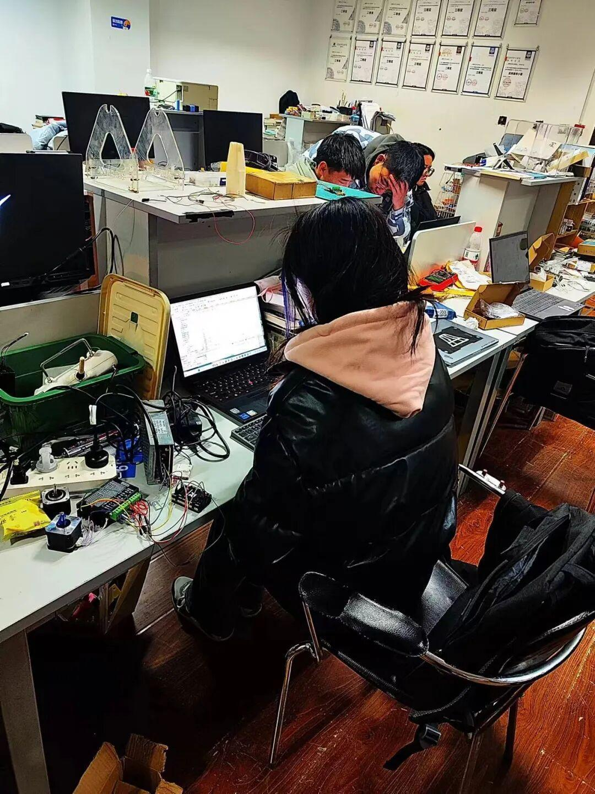
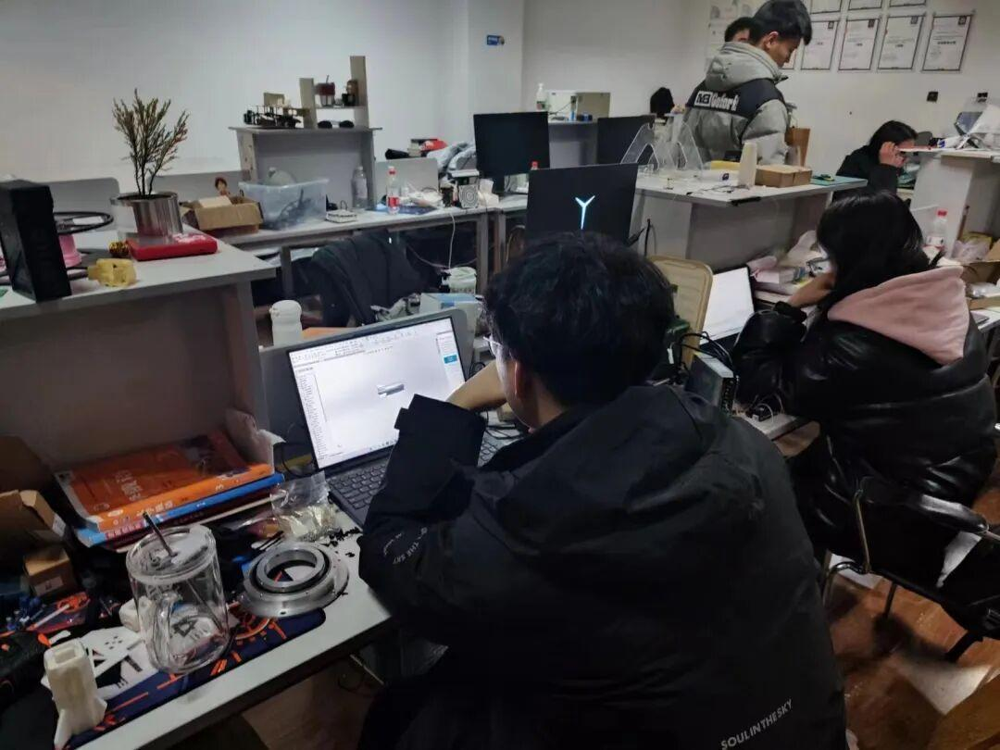

24赛季 | 飞镖组の备赛日常
前情提要
伴随着新学期的开始，Ambition战队又全身心的投入到了紧张的备赛环节之中为即将到来的联盟赛做好充足的准备。
飞镖机器人的攻击能力十分强大，每发飞镖可以对防御塔造成高达750点的伤害，且可对敌方机器人造成5~10秒的致盲状态，在RM比赛中被视为战略武器，是一种重要的攻击手段。
今天让我们走进飞镖组的备赛生活之中。
电控组
电控组的成员们负责对pitch和yaw的电机进行调试，想要让飞镖机器人更加的精准，就要经过不断地试错，一点点的调试。

开赛时间越来越近，留给调试的时间是越来越少，电控组的同学们一下课便奔赴实验室调整数据。

机械组
机械组的同学负责的是飞镖机器人飞镖的设计与制作。

飞镖的制作难度很大，镖体材料的选择、飞镖弹散和飞镖镖架抖动等诸多的问题，不过在机械组的同学的努力之下，最新的飞镖已经设计完成，进入加工环节了。蓄势待发！

番外
飞镖电控组某位不愿透露姓名的成员：“命中就是成功，当然还是越多越好！！！”
END
排版|妄逸
文案|妄逸
图片|沈理电协
审核|xx敏